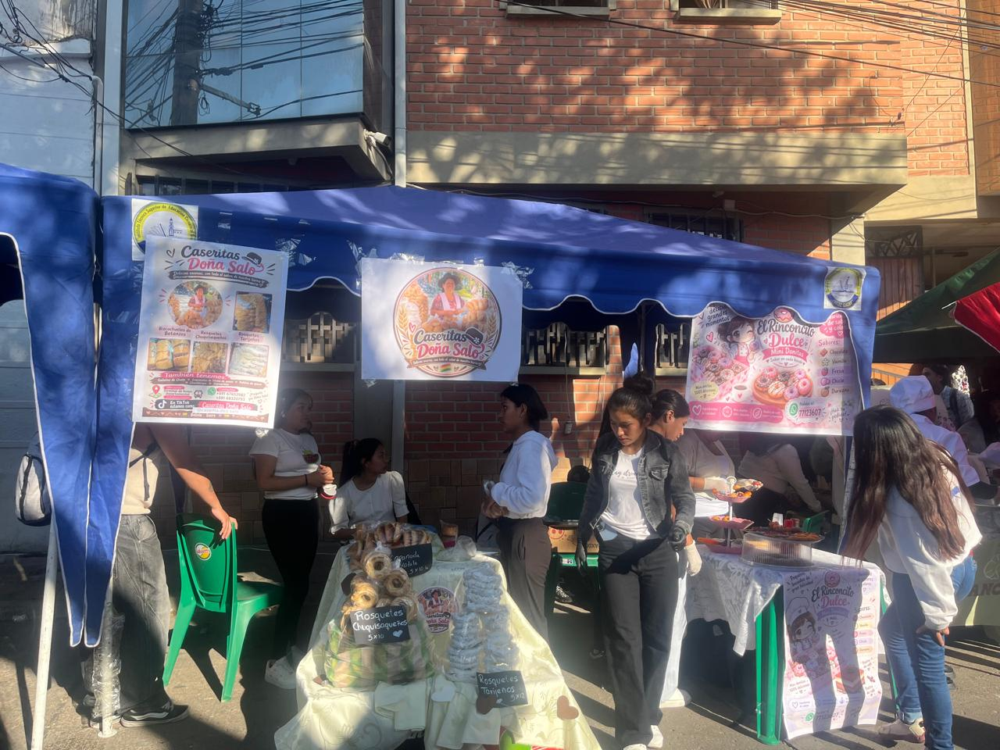
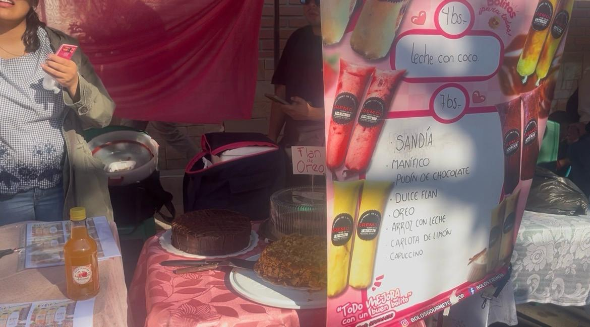
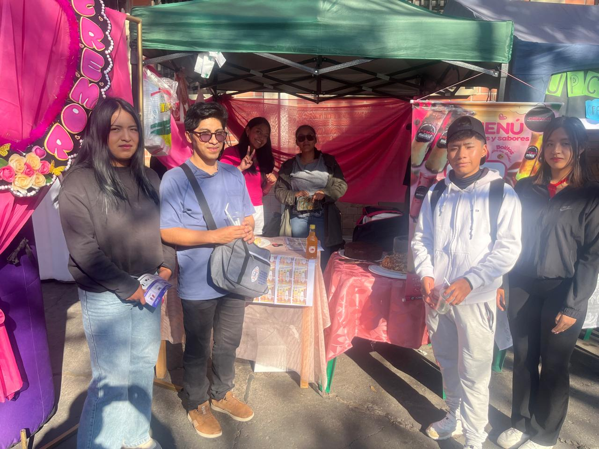

STAND 2: CREMOR “BOLOS GOURMET”
Cremor “Bolos Gourmet” es un emprendimiento dedicado a la elaboración y venta de helados y bolos artesanales. Su propuesta ofrece productos refrescantes, ideales para disfrutar y compartir. Durante la visita pude conocer la presentación de sus productos y la imagen de su marca.
Fotografías del puesto


Fotografía de nuestra visita

Productos que ofrece
Emprendimiento: Cremor “Bolos Gourmet”.
Productos: Helados y bolos artesanales.
Elaboración: Productos artesanales.
Información de contacto
Dirección: Calle Bernardo Bitti, N.º 211, puerta de arriba de la Facultad de Economía.
WhatsApp: 67606430
Instagram: bolosgourmetcremor
Facebook: Bolos cremor
TikTok: cremor_sucre
Video del emprendimiento
Experiencia de la visita
Conocer este emprendimiento me permitió observar cómo una marca presenta sus productos y busca atraer a sus clientes. La elaboración artesanal y la variedad de productos son aspectos importantes de su propuesta.